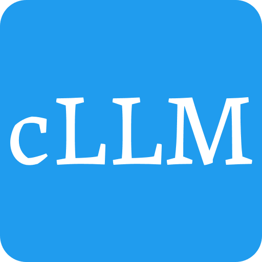
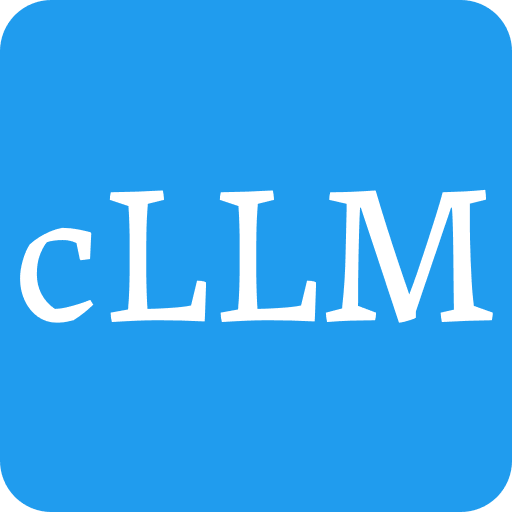

|  |
cLLM 0.1.0
C++ LLM
|

|
|  |
cLLM 0.1.0
C++ LLM
|
|


LLM inference using pure c and c++. The c in cLLM means crack.
Our goal is to crack the difficulties of LLM and make it available to evryone and everywhere.
We support the following features:
| Model | Parameters | Status |
|---|---|---|
| Qwen | 1.8B | |
| 7B | ||
| 14B | ||
| DeepSeek | 7B | |
| DeepSeek | 67B | |
| Llama | 7B |
Use the following command to build and run the executable target.
Use the following commands from the project's root directory to run the test suite.
To collect code coverage information, run CMake with the -DENABLE_TEST_COVERAGE=1 option.
Use the following commands from the project's root directory to check and fix C++ and CMake source style. This requires clang-format, cmake-format and pyyaml to be installed on the current system.
See Format.cmake for details. These dependencies can be easily installed using pip.
The documentation is automatically built and published whenever a GitHub Release is created. To manually build documentation, call the following command.
To build the documentation locally, you will need Doxygen, jinja2 and Pygments installed on your system.
The project also includes an all directory that allows building all targets at the same time. This is useful during development, as it exposes all subprojects to your IDE and avoids redundant builds of the library.
The test and standalone subprojects include the tools.cmake file which is used to import additional tools on-demand through CMake configuration arguments. The following are currently supported.
Sanitizers can be enabled by configuring CMake with ‘-DUSE_SANITIZER=<Address | Memory | MemoryWithOrigins | Undefined | Thread | Leak | 'Address;Undefined’>`.
Static Analyzers can be enabled by setting -DUSE_STATIC_ANALYZER=<clang-tidy | iwyu | cppcheck>, or a combination of those in quotation marks, separated by semicolons. By default, analyzers will automatically find configuration files such as .clang-format. Additional arguments can be passed to the analyzers by setting the CLANG_TIDY_ARGS, IWYU_ARGS or CPPCHECK_ARGS variables.
Ccache can be enabled by configuring with -DUSE_CCACHE=<ON | OFF>.
Can I use this for header-only libraries?
Yes, however you will need to change the library type to an INTERFACE library as documented in the CMakeLists.txt. See here for an example header-only library based on the template.
I don't need a standalone target / documentation. How can I get rid of it?
Simply remove the standalone / documentation directory and according github workflow file.
Can I build the standalone and tests at the same time? / How can I tell my IDE about all subprojects?
To keep the template modular, all subprojects derived from the library have been separated into their own CMake modules. This approach makes it trivial for third-party projects to re-use the projects library code. To allow IDEs to see the full scope of the project, the template includes the all directory that will create a single build for all subprojects. Use this as the main directory for best IDE support.
I see you are using
GLOBto add source files in CMakeLists.txt. Isn't that evil?
Glob is considered bad because any changes to the source file structure might not be automatically caught by CMake's builders and you will need to manually invoke CMake on changes. I personally prefer the GLOB solution for its simplicity, but feel free to change it to explicitly listing sources.
I want create additional targets that depend on my library. Should I modify the main CMakeLists to include them?
Avoid including derived projects from the libraries CMakeLists (even though it is a common sight in the C++ world), as this effectively inverts the dependency tree and makes the build system hard to reason about. Instead, create a new directory or project with a CMakeLists that adds the library as a dependency (e.g. like the standalone directory). Depending type it might make sense move these components into a separate repositories and reference a specific commit or version of the library. This has the advantage that individual libraries and components can be improved and updated independently.
You recommend to add external dependencies using CPM.cmake. Will this force users of my library to use CPM.cmake as well?
CPM.cmake should be invisible to library users as it's a self-contained CMake Script. If problems do arise, users can always opt-out by defining the CMake or env variable CPM_USE_LOCAL_PACKAGES, which will override all calls to CPMAddPackage with the according find_package call. This should also enable users to use the project with their favorite external C++ dependency manager, such as vcpkg or Conan.
Can I configure and build my project offline?
No internet connection is required for building the project, however when using CPM missing dependencies are downloaded at configure time. To avoid redundant downloads, it's highly recommended to set a CPM.cmake cache directory, e.g.: export CPM_SOURCE_CACHE=$HOME/.cache/CPM. This will enable shallow clones and allow offline configurations dependencies are already available in the cache.
Can I use CPack to create a package installer for my project?
As there are a lot of possible options and configurations, this is not (yet) in the scope of this template. See the CPack documentation for more information on setting up CPack installers.
This is too much, I just want to play with C++ code and test some libraries.
Perhaps the MiniCppStarter is something for you!